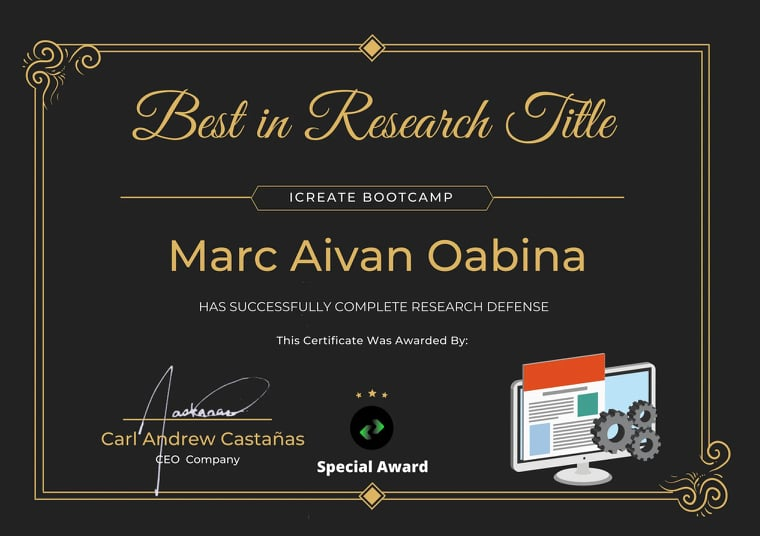
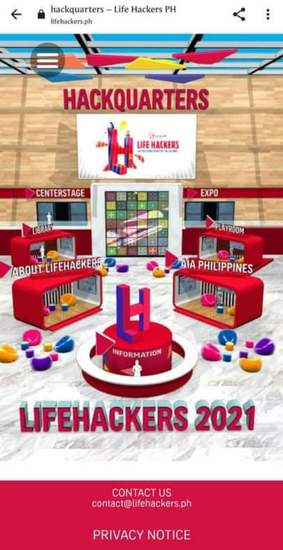
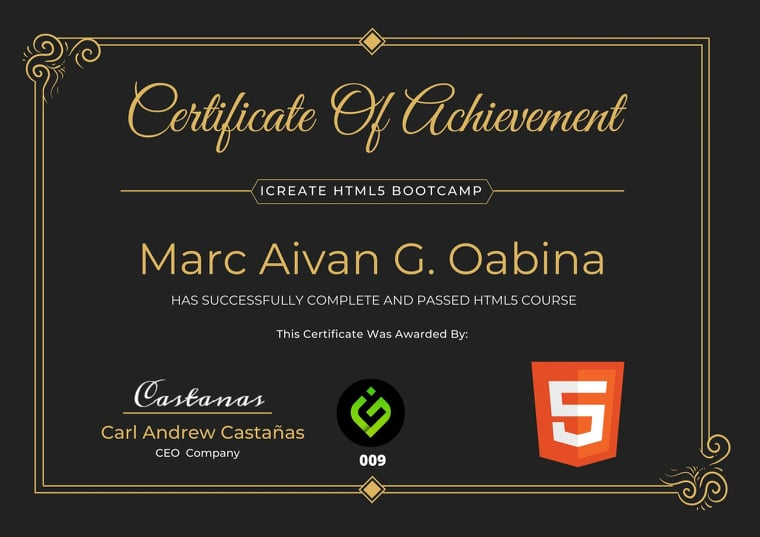

Stuff I've put together
Completed Research Defense
Literally a calculator.
Hackathon 2021
Participating in AIA Life Hackers
Got HTML Certificate
An interval timer. Set the short and long intervals and the app will alternate between the "short" and "long" countdowns, with an alarm in between.
Star Trek Quote Generator

Over fifty Star Trek: The Original Series quotes. Explore quotes from the final frontier, on your very own Federation-issue PADD.
Twenty Roars (Simon)

A T-Rex themed Simon clone. Includes a "zen" and a simpple record/playback button.
Tic-Tac-Toe

An un-beatable game of tic-tac-toe.
Twitch.tv custom streamer list

Presents a list of Twitch pre-selected Twitch streamers, sorts by status, and describes the current streaming session.
Wikipedia Article Search

Search function pulls ten Wikipedia article via the MediaWiki API.
Local Weather

Current local weather. Grabs user location data and pulls data from the openweathermap.org